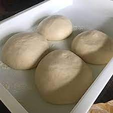

Explorar el mundo de las recetas de comida es sumergirse en un universo de sabores, texturas y creatividad culinaria. Cada receta cuenta una historia única, donde ingredientes cuidadosamente seleccionados se combinan para crear platos que despiertan los sentidos. Desde las recetas tradicionales transmitidas de generación en generación hasta las innovadoras creaciones de chefs contemporáneos, la cocina es un arte en constante evolución. Experimentar con diferentes ingredientes, técnicas de preparación y presentaciones nos permite descubrir nuevas dimensiones de placer gastronómico. Las recetas no solo son guías para la preparación de alimentos, sino también puertas abiertas a la diversidad cultural y al disfrute compartido alrededor de la mesa. Ya sea explorando la simplicidad reconfortante de platos caseros o aventurándonos en la complejidad de recetas gourmet, las posibilidades son infinitas, y cada receta es una invitación a explorar y disfrutar de la riqueza de la gastronomía.
Preparar la masa de pizza es un proceso que combina la ciencia y el arte de la cocina. Comienza con la armoniosa mezcla de harina de trigo, agua tibia, levadura, aceite de oliva y una pizca de sal. La harina, que actúa como lienzo culinario, se convierte en el medio perfecto para integrar los demás ingredientes y dar forma a la base de nuestra pizza. La levadura, ese agente mágico, inicia la danza química, provocando la fermentación que inflará la masa y le proporcionará esa textura aireada y deliciosa. Mientras amasamos con cuidado, cada ingrediente se fusiona para crear una masa suave y elástica. La paciencia es clave, ya que permitir que la masa repose y fermente desarrolla su sabor y textura característicos. El resultado es una masa lista para convertirse en el lienzo de nuestras creaciones culinarias, una base versátil que llevará consigo el amor y la dedicación puestos en su preparación.
